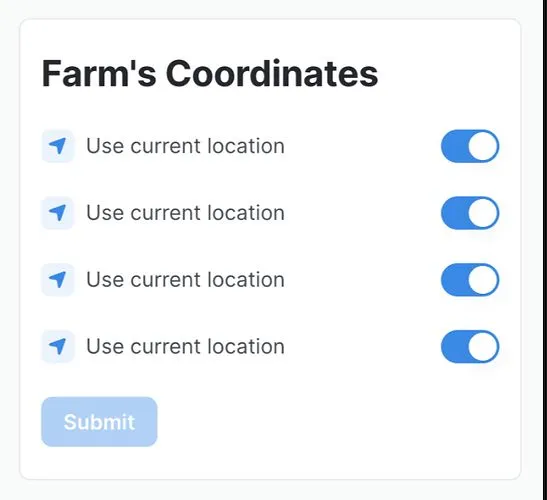

Detecting production bugs through missing Mixpanel events
Originally posted on LinkedIn, July 2, 2026.
Tehila Adika, an excellent product manager from another team, found a bug in one of our buttons. It had been Disabled for weeks, and nobody had noticed. A bug had been in production for days without triggering a single alert.
These bugs work in the opposite way from the ones we usually monitor. If a tree falls in a forest and nobody hears it, did it make a sound? The same question applies to bugs caused by “dead code.”
When a button is Disabled for everyone, the system does not report an error. Instead, it goes quiet. You can detect that silence by looking for a drop in events.
I added a daily Mixpanel scan for cases with “zero daily events.” The scheduled script looks for anomalies and drops in events. I also added checks for spikes in the opposite kind of events: errors reported to Mixpanel. When it finds either, it posts to a dedicated monitoring channel.
If there are no drops, errors, or other problems, the script stays silent, just like the falling tree.
Bugs reported by customers are the worst kind. We could have caught them before they reached dozens of customers. They damage trust and create noise from support all the way to the developer who has to fix them in a cold sweat.
Every user report is an opportunity to improve the system’s alerting, even when the right alert works in the opposite direction from the usual threshold of errors.
Thanks to Tehila Adika for the inspiration.
